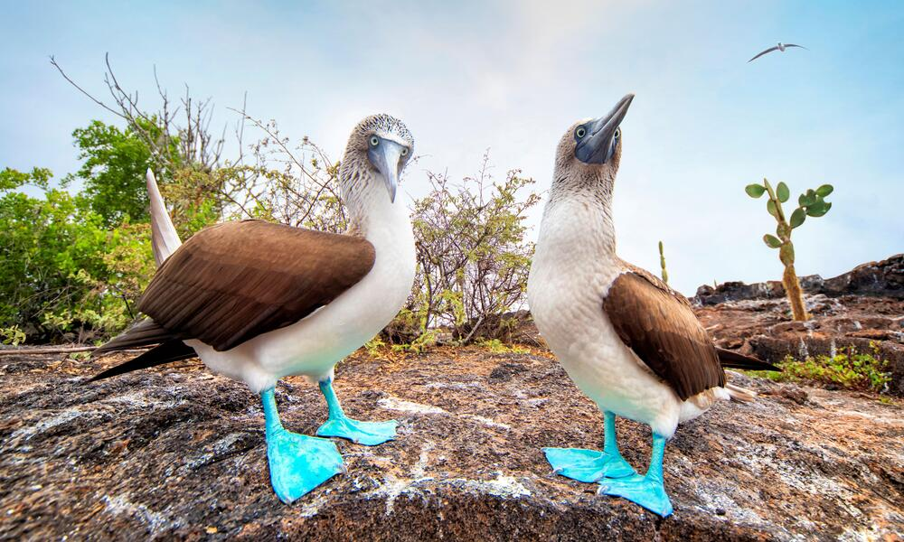

A
AAA
AAAAA
AAAAAAA
AAAAAAA
AAA
AAA
Testing Text Tags
Some words could be bolded. While others can be italisized. Some could even be emphasised.
Sometimes many words could hold importance.
The command to copy is ctrl + c
float price = 3.14
For the next html elements that I will mess around with, I will try to theme it around birds
Most Unique Birds
In No Particular Order
- Kakapo
- Secretary Bird
- Shoebill Stork
My Favorite Birds
- Shoebill Stork
- Toucan
- Puffins
Shoebill Stork
Shoebill storks are large, striking birds native to tropical East Africa, particularly in swampy areas of South Sudan, Uganda, and Zambia. Known for their massive, shoe-shaped bills, they are solitary hunters, preying primarily on fish, amphibians, and small reptiles. Despite their intimidating appearance, they are relatively calm and reserved birds. Shoebills are considered vulnerable due to habitat loss and human disturbances.
Random Bird
The MALL is a species of dabbling duck that is commonly found in wetlands, lakes, rivers, and ponds across North America, Europe, and parts of Asia.

| Common Name | Scientific Name | Wingspan |
|---|---|---|
| American Woodcock | Scolopax minor | 46cm |
| Great Egret | Ardea alba | 130cm |
| Osprey | Pandion haliaetus | 160cm |
Then this ebony bird beguiling my sad fancy into smiling, By the grave and stern decorum of the countenance it wore, “Though thy crest be shorn and shaven, thou,” I said, “art sure no craven, Ghastly grim and ancient Raven wandering from the Nightly shore— Tell me what thy lordly name is on the Night’s Plutonian shore!” Quoth the Raven “Nevermore.”
Mythical Birds
- Pheonix
- an immortal bird that cyclically regenerates or is otherwise born again
- Alicanto
- bird with luminescent feathers which feeds on gold or silver
- Hugin and Munin
- two ravens that serve as messangers
This text has been here
This text will be deleted
This text will be added
302 Island Ave #101, San Diego, CA 92101